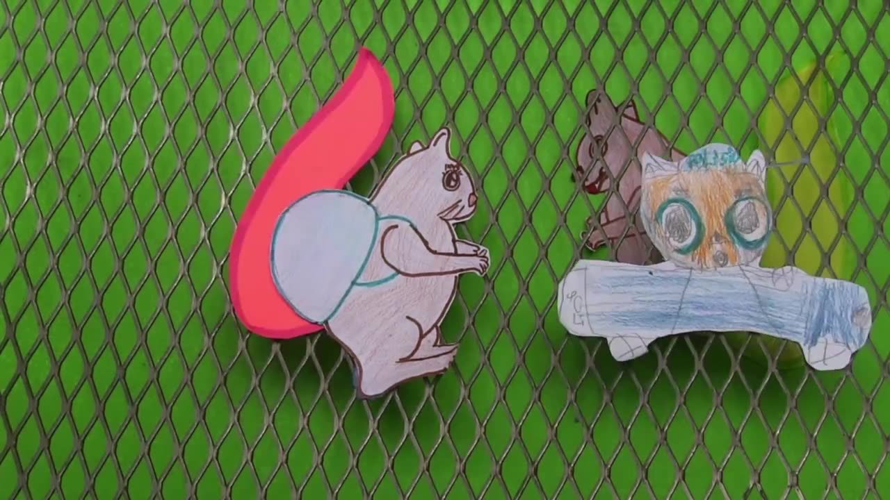
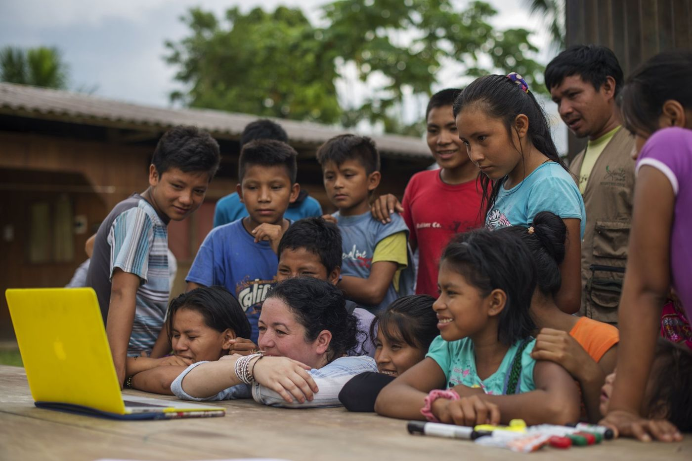
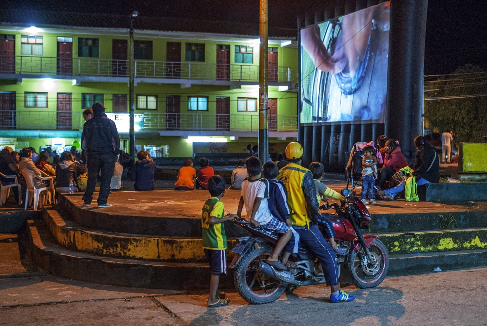
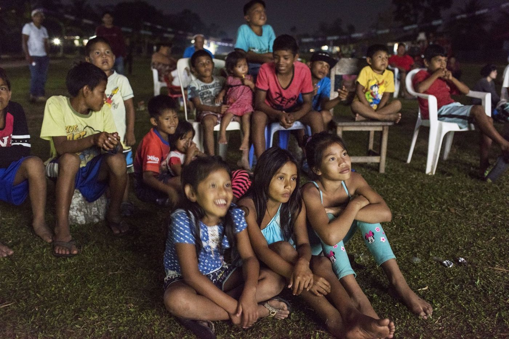
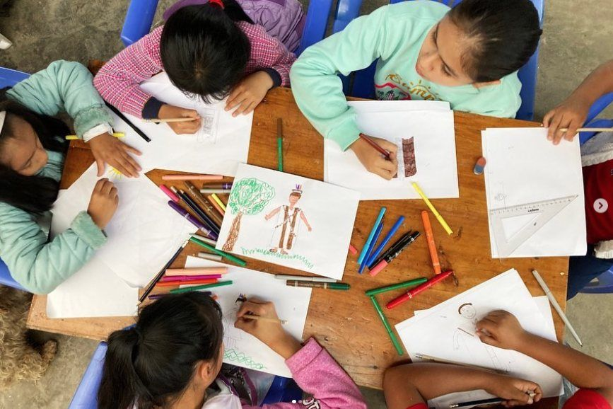

Línea de trabajo
Historias en movimiento
La movilidad humana atraviesa buena parte de nuestro trabajo. Con niñas, niños, adolescentes y familias migrantes, refugiadas y de las comunidades de acogida, creamos historias que cruzan fronteras, previenen la xenofobia y tejen convivencia. Porque nadie debería ser extranjero en el lugar donde vive.
Producción colaborativa de La Combi
4.318 kilómetros
🏆 Primer lugar · I Concurso de Cortometrajes sobre Migración en el Perú «Migrantes en Pantalla» · Colectivo Mujeres Migrantes Maltratadas, 2026
Un cortometraje inspirado en los testimonios de cuatro jóvenes venezolanas que llegaron caminando desde su país hasta el Perú en busca de una vida mejor.
Creación colectiva de La Combi · arte rodante: Carolina Martín, Teresa Castillo, Omar Lucas, Cristian Cancho, Belén del Castillo y Gabriela González.
Proyecto propio · Perú · México · Censurados
Stop Motion, Stop Walls
Con la técnica del stop motion, niñas, niños y adolescentes reflexionan sobre la migración, las fronteras y las barreras visibles e invisibles, a través de la creación colectiva.

Con la OIM Perú · desde 2022
Memorias Migrantes
Laboratorios audiovisuales participativos en distintos puntos del país, donde niñas, niños y adolescentes venezolanos y peruanos exploran y comparten sus propias experiencias. El audiovisual como herramienta de integración, inclusión social y diálogo con las comunidades de acogida.

Lima · con la Cruz Roja (IFRC)
Somos comunidad
Talleres audiovisuales con niñas, niños y adolescentes de origen peruano y venezolano para crear cortometrajes que promueven la integración, la convivencia y la prevención de la discriminación. Los hicimos nosotras, con financiación de la Cruz Roja.

Con otras instituciones

Más historias
Con Plan Internacional · Tumbes, 2019
30 adolescentes venezolanos y peruanos de 12 a 17 años, promotores en Tumbes, contaron sus historias de migración e integración: guion, animación, rodaje por la ciudad, sus voces y su música.
¿Quieres? ¿Puedes? ¿Te atreves?
Tumbes · 2019 · 3 minOtros proyectos
Con la OIM, la Cruz Roja y otras organizaciones.
Con la IFRC
La Caja de los Sueños
Un noticiero infantil creado por niñas y niños del Perú.
Ver en La República →
Con la OIM
Arte en Movimiento
Talleres, intervenciones artísticas, creación audiovisual, cine-foros y cine al aire libre gratuitos, que reunieron a población migrante y refugiada y comunidades de acogida para prevenir la xenofobia.
Ver el vídeo →
Con la OIM
Tejiendo Sonrisas
Narración oral, teatro y audiovisual para acercar a niñas y niños a las experiencias de movilidad humana, la diversidad y la interculturalidad.

Con la OIM
Matrícula en Acción
Actividades lúdicas, narrativas y audiovisuales para niñas, niños, adolescentes y sus familias, que facilitan el conocimiento de sus derechos y el acceso a la educación de la población migrante.